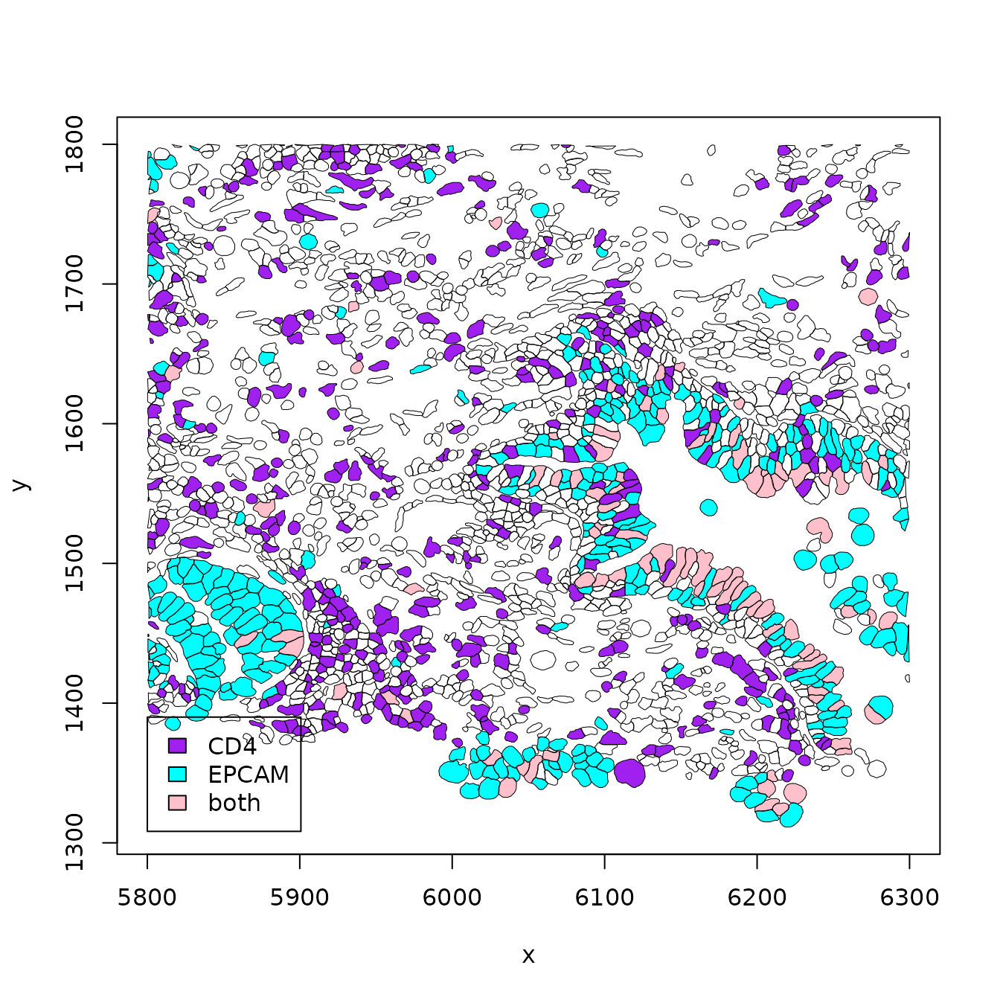
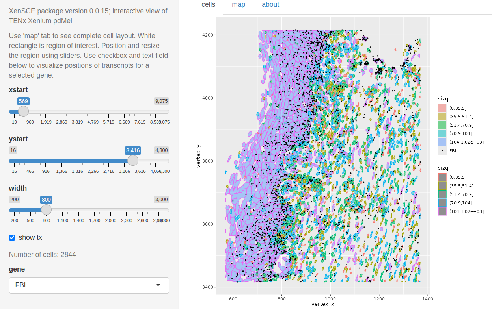

XenSCE: exploration of a class for Xenium demonstration data
Vincent J. Carey, stvjc at channing.harvard.edu
September 07, 2024
Source:vignettes/XenSCE.Rmd
XenSCE.RmdIntroduction
Motivation
Numerous groups are working on methodology for analyzing new data resources emerging from spatial transcriptomics experiments. The “computing technology stack” necessary to work with such data is complex. The following comment (Aug 16 2024) from the scverse group is characteristic:
The SpatialData Zarr format, which is described in our design doc, is an extension of the OME-NGFF specification, which makes use of the OME-Zarr, the AnnData Zarr and the Parquet file formats. We need to use these combination of technologies because currently OME-NGFF does not provide all the fundamentals required for storing spatial omics dataset; nevertheless, we try to stay as close as OME-NGFF as possible, and we are contributing to ultimately make spatial omics support available in pure OME-NGFF.
In Bioconductor 3.19, we might be committed to all these technologies (which include but do not mention HDF5) plus R, reticulate, basilisk, and sf to have a widely functional solution. Attaching the Voyager package leads to loading over 100 associated packages. The XenSCE package is intended to explore the balance between functionality and high dependency load specifically for the analysis of outputs from 10x Xenium experiments. The XenSCE class extends SpatialExperiment to optionally include references to parquet files that manage voluminous geometry data; geometry can also be handled as DataFrame for sufficiently low volume experiments.
As of 0.0.7 of XenSCE, a new class, XenSPEP, is provided to address parquet representation of cell, nucleus and transcript coordinates.
Data
This package is based on publicly available datasets.
Pancreas sample. Obtainable via
data(panc_sub)this is derived fromSpatialFeatureExperiment::readXenium(SFEData::XeniumOutput("v2"))but the assay has been replaced with an equivalent dgCMatrix instance, and the geometry data are provided as thin DataFrame instances (thin meaning each coordinate has a separate row), whereas the SpatialFeatureExperiment uses simple features to organize geometry information on cells, nuclei, and transcripts.Human brain FFPE Glioblastoma Data. We have taken several components of the distribution and placed them in an NSF Open Storage Network bucket. The
cache_assetsfunction in this package will download and cache about 4GB of compressed sparse matrix and parquet data files; it returns the paths to these resources. Thebuild_demofunction creates an instance ofXenSCE.Human lung (SFE-based) FFPE Lung cancer dataset. We used scripts distributed by scverse to create a zarr-based representation, and used
readXeniumon the 10x distribution. Useexample(sfe2xsce)to retrieve and cache and transform the SpatialFeatureExperiment to a XenSCE instance.Human dermal melanoma FFPE Human pan tissue dataset. For this dataset, we retrieved the
outs.zipfile from this site and ranXenSCE::ingest_xenon the contents, producing a XenSPEP instance which was then saved in an HDF5-backed representation. This, along with the parquet files for cell, nucleus, and transcript coordinates, are zipped together and placed in an Open Storage Network bucket for retrieval viacache_xen_sk.Human prostate adenocarcinoma FFPE Human pan tissue dataset. For this dataset, we retrieved the
outs.zipfile from this site and ranXenSCE::ingest_xenon the contents, producing a XenSPEP instance which was then saved in an HDF5-backed representation. This, along with the parquet files for cell, nucleus, and transcript coordinates, are zipped together and placed in an Open Storage Network bucket for retrieval viacache_xen_prost.Human Lung (SPEP example) Again working with FFPE Lung cancer preview, but working with
ingest_xenandzipXenSPEPto produce a portable archive. Useexample(cache_xen_luad)to obtain this instance of XenSPEP.
A quick look
Small in-memory example
Boundary coordinates are in memory, in S4Vector::DataFrame instances.
## class: XenSCE
## dim: 514 6272
## metadata(0):
## assays(1): counts
## rownames(514): ENSG00000121270 ENSG00000130234 ...
## UnassignedCodeword_0497 UnassignedCodeword_0499
## rowData names(1): symbol
## colnames(6272): abclkehb-1 abcnopgp-1 ... odmgoega-1 odmgojlc-1
## colData names(12): cell_id x_centroid ... nucleus_area sample_id
## reducedDimNames(0):
## mainExpName: NULL
## altExpNames(0):
## spatialCoords names(2) : x_centroid y_centroid
## imgData names(0):
## Geometry elements:
## nrow ncol
## transcripts 367354 11
## cellbounds 156512 4
## nucbounds 154156 4
plot(SpatialExperiment::spatialCoords(panc_sub),
pch="." , cex=1.5, xlab="x", ylab="y", main="cell centroids")Larger hybrid example
In this example, transcript counts are in memory in a sparse matrix, but geometry information is handled in parquet. The view_seg_g2 function allows selection of two gene symbols, and cells are colored according to single or double occupancy.
luad = cache_xen_luad()
pa = cache_xen_luad()
luad = restoreZipXenSPEP(pa)
rownames(luad) = make.names(SummarizedExperiment:::rowData(luad)$Symbol, unique=TRUE)
out = view_seg_g2(luad, c(5800, 6300), c(1300, 1800), lwd=.5, gene1="CD4", gene2="EPCAM")
legend(5800,1390, fill=c("purple", "cyan", "pink"), legend=c("CD4", "EPCAM", "both"))
out$ncells## [1] 2074Interactivity
In inst/app4, code is provided to work with the primary dermal melanoma dataset. A map of the cell coordinates can drive focused exploration. The region of interest is shown by a whitened rectangle in the upper left corner.

Cells are colored by quintile of size. Points where FBL transcripts are found are plotted as dots.

More work is needed to identify useful exploratory visualizations.
Large disk-based example
HDF5+parquet-backed examples
We want to be able to accommodate very large numbers of cells and transcripts without heavy infrastructure commitments. Examples with the XenSPEP class illustrate the current approach.
We’ll use the prostate adenocarcinoma 5K dataset to demonstrate. A 900MB zip file will be cached.
prost = cache_xen_prost()prost is the path to a zip file in a BiocFileCache instance.
Create a folder to work in, and unzip.
dir.create(xpw <- file.path(tempdir(), "prost_work"))
unzip(prost, exdir=xpw)
dir(xpw)## [1] "cell_boundaries.parquet" "nucleus_boundaries.parquet"
## [3] "README.txt" "transcripts.parquet"
## [5] "xen_prost"Restore the SpatialExperiment component.
prostx = HDF5Array::loadHDF5SummarizedExperiment(file.path(xpw, "xen_prost"))
prostx## XenSPEP instance. SCEcomponent:
## class: SingleCellExperiment
## dim: 5006 193000
## metadata(0):
## assays(1): counts
## rownames: NULL
## rowData names(3): ID Symbol Type
## colnames(193000): aaaagkdm-1 aaaamcnn-1 ... oioglipl-1 oiohaagd-1
## colData names(15): cell_id x_centroid ... segmentation_method sample_id
## reducedDimNames(0):
## mainExpName: Gene Expression
## altExpNames(5): Deprecated Codeword Genomic Control Negative Control
## Codeword Negative Control Probe Unassigned Codeword
## use spatialCoords() for cell centroids.
## Geometry element paths (not loaded):
## ./cell_boundaries.parquet
## ./nucleus_boundaries.parquet
## ./transcripts.parquetApproaching obsolescence: GBM
If you are interested in working with the 10X GBM data, use the following:
library(XenSCE)
myxen = retrieve_demo() # steps noted above were done
myxenTo sample the cell centroid coordinates and plot, use:
set.seed(1234)
sinds = sort(sample(seq_len(ncol(myxen)), 5000))
plot(myxen$x_centroid[sinds], -myxen$y_centroid[sinds],
xlab="x", ylab="y", main="Sample of 5000 centroids", pty="s")Compare the basic layout to the ‘summary’ visualization shipped with the data.

from site
Clipping and visualizing
clip_rect is an endomorphism that restricts the cells in an XenSCE instance to those with centroids in given boundaries in x and y. By default, cell centroid and transcript locations are added. AT PRESENT (0.0.15) THIS ONLY WORKS FOR IN-MEMORY/NON-PARQUET-BASED ExAMPLES.
plotCellBoundaries(clip_rect(panc_sub, xlim=c(600,850), ylim=c(500,750)), add_tx=FALSE)With transcript locations:
plotCellBoundaries(clip_rect(panc_sub, xlim=c(600,850), ylim=c(500,750)))